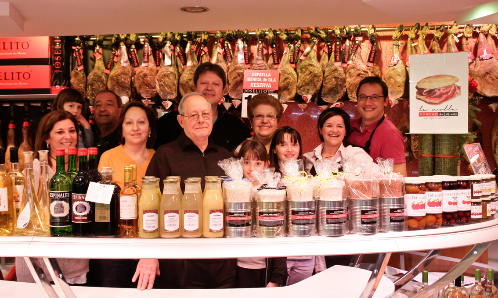

"The best salespeople use what they sell."
I'm not an engineer. Yet I ship production software every week - apps and tools I use to run my own sales business, built by describing what I want to an autonomous AI agent.
That's exactly the future Cognition is building. So when I pitch it, I won't be reading a deck - I'll be showing my own work. I am the proof point.
"Give them what they need, not what's expensive. They'll always come back."
My grandfather ran our family butcher shop (founded 1951) and knew every customer by name - what they needed before they asked. That's where I learned the only durable sales strategy: be a trusted advisor, never a vendor.

My family butcher business, founded in 1951. Moreno Antolinos Cansaladers.
"Don't complain. Find a way."
Inherited a territory at 10% attainment with zero event budget. Instead of complaining, I self-funded my own flights across APAC to hunt greenfield accounts. 4x'd the pipeline and closed the year at 514% of quota. No infrastructure, no air cover - just a clear goal and relentless effort. That's the 0→1 muscle.


10+ years as a football captain. Lead by example, put the team first, improve every day.
"Why Cognition?"
Every wave of technology I've sold made expert work accessible to more people. Google Ads put a sales team in every founder's pocket. Cloud put a data center behind every startup. Autonomous agents put an engineering team behind anyone with an idea. I've lived that last one personally - it changed how I work.
I sell to the exact buyer Cognition needs to win: founders, CTOs, VPs of Engineering, and SREs. I don't just survive technical conversations - I start them. I've co-architected LLM routers with engineers, demoed to SRE teams, and shipped a production agent that reclaimed $300K+/year by cutting the time SREs lost to Jira bugs in half.
Singapore and Southeast Asia are greenfield. The digital natives here are some of the fastest adopters of agentic tooling in the world, and I've spent 8 years building the relationships. Cognition needs someone who can build a region from zero - and who engineers actually trust.
"Where I'd make the difference."
Build the motion, not just close deals
14 years of greenfield acquisition: 50+ net-new logos >$250K, 10+ >$1M. I build the playbook where none exists, then scale it.
Credibility with technical buyers
Professional Cloud Architect who ships code with AI agents. I speak the language of the people who actually decide whether to adopt Devin.
A region, not a rolodex
8 years across SEA digital natives at Google Cloud. Top 1% global performer, President's Club 2025. The relationships already exist.
I use the product I'd sell
A non-engineer shipping real apps with autonomous agents. The most honest demo is my own daily workflow.
Give me the territory others think is too early. That's where I do my best work - and that's exactly where Cognition is.
"There's always a way. You just have to find it."
See the proof →